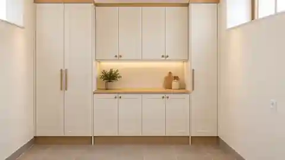
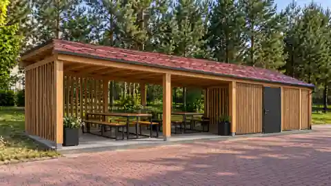

Up to 1.2% of GPM
An allocation of Lithuanian personal income tax through VMI. It is not 1.2% of your salary or an additional bank payment.
2027 campaignTake the opportunity to support those you trust. Find out how to allocate up to 1.2% of your GPM income tax.
LITHUANIA · GPM INFORMATION · 2027
What this share of income tax means, how to choose a recipient and complete FR0512. Explanations, examples and official sources in one place.
2026 → 2027 · FR0512 · VMI
2027 campaign: applications run from 1 January to 3 May 2027. You can explore the guide now.
START WITH THE BASICS
Allocating income tax through VMI and transferring your own funds are different mechanisms. This guide explains the distinction.
An allocation of Lithuanian personal income tax through VMI. It is not 1.2% of your salary or an additional bank payment.
2027 campaignA bank transfer to the parish account. You can help today, whether or not you take part in the Lithuanian GPM scheme.
At any timeINTERACTIVE GUIDE
Choose a step to see its explanation and visual guide. This is an instructional illustration, not a real EDS screen.
Open the official VMI Electronic Declaration System and sign in as usual. Do not enter banking passwords or your personal identification code on this information website.
In EDS, select Deklaravimas → Pildyti formą → Dažniausiai pildomos formos → Prašymas skirti paramą. Complete the application with the electronic wizard.
Find your chosen recipient in EDS by code and check the full name. Bukiškis parish example: 301004570 — Bukiškio stačiatikių Kristaus Gimimo parapija. Check that the recipient is available in the system before submitting.
You may allocate up to 1.2%. For the 2027 campaign, the starting tax year is 2026. The latest end year is 2030: five tax years, 2026–2030 inclusive.
Check the recipient, percentage and years. Submit, then check in EDS that your application has been accepted. If you must file GPM311, meet the deadline set by VMI.
This diagram explains the process; it does not reproduce the EDS interface. Check VMI rules and recipient details before submitting.
Open official EDSReligious communities regain eligibility for this support from 2027. This site has not verified that the parish with code 301004570 is available in EDS or that its GPM account is registered in Mano VMI. Check the recipient in EDS before applying; the parish itself must check its account details.
EXPLORE AN EXAMPLE
Enter the annual GPM amount used to allocate support: not your salary, the outstanding tax balance or your refund. The FAQ below explains the calculation base. This calculator provides an illustration only.
Enter an amount from 0 to 100,000,000 with no more than two decimal places.
3 000 € × 0.012 = 36 € · 25 × 36 € = 900 €
Annual GPM × 0.012
The calculation stays in your browser. VMI determines the final amount. An allocation below €3 to one recipient for a tax year is not transferred; this calculator does not apply that threshold.
The player does not load before you click. After consent, your browser connects to YouTube/Google, which may process technical data.
VMI VIDEO GUIDE
The official video linked in VMI’s FR0512 guidance. Audio is in Lithuanian; written explanations on this website are available in six languages.
The video may show earlier years and an older interface. For the 2027 campaign, follow the dates and tax periods in current VMI guidance.
Read the steps insteadWITHOUT THE COMPLICATIONS
No. FR0512 allocates part of your income tax; it does not debit an additional donation from your bank account. A direct bank transfer in the support section is a separate way to give.
Lithuanian tax residents (nuolatiniai Lietuvos gyventojai) with income subject to GPM in the relevant year can participate. The 2027 campaign concerns 2026 income. Citizenship alone neither grants nor excludes eligibility. Tax residency follows tax rules, not the website language; check your status with VMI if you live abroad.
Yes: allocations in this recipient category must total no more than 1.2%. You may separately allocate up to 0.6% to political organisations and up to 0.6% to trade unions or their associations; these limits do not reduce the 1.2% allowance. An amount below €3 to one recipient for a tax year is not transferred.
Usually you do not need to reapply if the valid application covers the relevant tax year, the recipient remains eligible and you are not changing the allocation. Check the period, recipient and application status in EDS. The law allows religious communities from 2027, but does not by itself confirm that your previous application will be executed.
FR0512 does not replace GPM311. If you must file an annual income tax return, file it on time: support is not transferred if the required return is missing or late. If you have no filing obligation, FR0512 alone does not require you to file GPM311. Check your obligation and applicable deadlines with VMI.
FR0512 and income tax returns are submitted in EDS, not on this site. VMI gives recipients aggregate amounts, not details about each person who supported them. Calculator values stay in your browser. After separate consent, “Ask AI” sends your question through Cloudflare to OpenAI; do not enter personal tax information.
You can make a voluntary bank transfer using the details in the parish-support section. Contact the parish about donating materials or helping with work.
Yes. A legal amendment effective on 1 January 2027 includes religious communities, associations and centres as recipients. It also adds state and municipal schools, building owners’ associations and gardeners’ associations. Check each recipient in VMI/EDS; this site has not verified this parish’s details for the 2027 campaign.
Submit the initial application for 2026 by 3 May 2027. Under current rules, an existing application for that year’s allocation can be corrected in EDS until 30 June 2027: change the recipient, percentage or period. To withdraw support for all recipients, submit a corrected application with no recipients. 30 June is a correction deadline, not an extension for initial applications.
Under the general procedure, VMI calculates and transfers support between 1 July and 15 November of the following year: in 2027 for income received in 2026. This does not guarantee a particular payment date. Check EDS notifications (Pranešimai) or Mano VMI; acceptance of FR0512 does not mean the money has already been transferred.
The annual GPM calculated in the return, not salary, the outstanding balance or a refund. VMI also adds fixed GPM paid for a verslo liudijimas business certificate and subtracts income tax paid abroad. If no return is filed or required, the base is GPM withheld by the income payer. VMI determines the exact amount; the calculator only multiplies your entered base by 0.012.
Being retired or out of work does not by itself exclude you. Tax residency and income on which GPM was calculated or withheld for the relevant year matter. If all income is tax-exempt and GPM is zero, there is no tax to allocate. Other taxable income may allow participation, subject to VMI conditions.
The instructions are based on VMI guidance. Where information differs, follow the current VMI guidance. This information website is not a tax authority service.
Reviewed · 5 October 2026ADDITIONAL INFORMATION · PARISH SUPPORT
A separate section about the Bukiškis church’s needs, parish projects and bank details. Donations are voluntary and are not required to use this guide.
Everyday needs
Church upkeep, utility bills, care of the premises and the life of the parish.

Concept, not completed workRenovation project
Improving the walls, work area and storage so we can prepare for gatherings and celebrations in a clean, practical space.

Concept, not completed workRestoration project
Replacing storage lost when a tree fell and creating a place to gather in the parish grounds.
Verified fundraising totals and budgets are not published here. Contact the parish for current project status and ways to help.
SEPARATE FROM GPM
A voluntary donation can be transferred directly to the parish’s bank account. This website does not accept payments or submit FR0512 applications.
We do not ask for card details, banking passwords or verification codes on this website.
EUR · AB SEB bankasDonation to the parish
Check the beneficiary and IBAN before confirming a transfer. Ask your bank about availability, conditions and fees.
We can explain the steps, but will not ask for passwords or access your bank on your behalf.
You can help maintain the church and support parish projects. Support is voluntary: use the donation details or visit the church website to learn more about parish life.